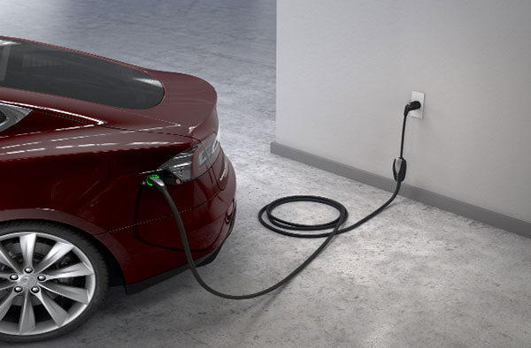

Оскільки на ринку з’являється все більше і більше електромобілів, часто буває важко точно зрозуміти, на що звернути увагу. У цьому простому та інформативному 5-кроковому посібнику ми допоможемо вам вибрати ідеальний електромобіль відповідно до ваших вимог та уподобань.
Багато в чому вибір електромобіля подібний до вибору звичайного автомобіля. Ви будете думати про такі речі, як:
Однак електромобілі – особливо 100% електромобілі (вони ж BEV) – вносять деякі додаткові нові міркування. Нижче ми викладемо 5 основних факторів, які слід враховувати, думаючи про придбання електромобіля.
У даний час на ринку представлені три типи електромобілів:
BEV (Battery Electric Vehicle) — транспортний засіб на електричних акумуляторах:
PHEV (Plug-in Hybrid Electric Vehicle) — це автомобіль, що приводиться у рух двигуном внутрішнього згоряння, який підтримується електродвигуном, що підключається:
HEV (Hybrid Electric Vehicle) — автомобіль із суміщенням електродвигуна та силової установки на іншому виді палива (наприклад, бензиновий або дизельний двигун):
Кожен тип автомобіля працює по-своєму, і важливо вибрати електромобіль, відповідний вашому стилю життя і перевагам:
Після визначення, який тип електромобіля підходить вам найкраще, наступним пунктом, на який слід звернути увагу при виборі електромобіля, є асортимент акумуляторів.
HEV - працює на бензині або дизельному паливі, тому ви просто заправляєтеся паливом, як зазвичай, і запас ходу не є проблемою.
PHEV - зазвичай запас ходу від акумулятора становить 30-60 км, в залежності від моделі. І ви можете перейти на бензиновий/дизельний двигун, коли акумулятор розрядиться. Таким чином, як і у випадку з HEV, дальністю поїздок можна керувати, заправляючись звичайним паливом. Однак, якщо ви хочете заощадити гроші, вибирайте PHEV із якомога більшим запасом акумулятора.
BEV - живляться тільки від акумулятора. Тому важливо заздалегідь подумати про максимальну відстань без підзарядки, перш ніж вибирати автомобіль.
Якщо у вас є приватний будинок або власне місце для паркування та ви вибираєте BEV або PHEV, найкраще встановити спеціальну точку зарядки. Потужність домашньої зарядки від мережі змінного струму обмежена 7,4 кВт. І зараз майже всі BEV можуть заряджатися із такою швидкістю, хоча і є деякі винятки.
Однак основне, на що слід звернути увагу при виборі повністю електричного BEV, – це швидка зарядка постійним струмом на спеціальних зарядних станціях. Кожен BEV має максимальну швидкість швидкої зарядки постійним струмом. Це може бути 50 кВт, 80 кВт, 100 кВт, 150 кВт тощо.
Що це означає на практиці? Зарядка постійним струмом дозволяє швидко зарядити ваш автомобіль. Наприклад, 20 хвилин, проведених на швидкому зарядному пристрої, дозволять збільшити подальший пробіг на понад 100 км.
Нові швидкі зарядні пристрої розраховані на потужність 150 кВт. Але якщо ваш автомобіль має внутрішню максимальну потужність зарядки постійним струмом всього 50 кВт, то він може заряджатися тільки при 50 кВт. Навіть від зарядного пристрою потужністю 150 кВт.
Тому, якщо у вас великі щоденні пробіги або ви любите здійснювати тривалі поїздки, подумайте про придбання BEV із високою швидкістю зарядки постійним струмом. Щоб мати можливість швидко заряджати ваш автомобіль.
Більшість PHEV не можуть бути швидко заряджені на зарядних станціях постійного струму. Хоча є винятки, такі як Mitsubishi Outlander PHEV або Range Rover Evoque PHEV.
Якщо у вас є персональна парковка, встановіть зарядний пристрій потужністю 7,4 кВт. Більшість BEV можуть заряджатися вдома потужністю 7,4 кВт або близько того. Кожна година «домашньої зарядки» збільшує запас ходу в середньому на 50 км. Зарядка PHEV може бути повільніше – від 3,6 кВт до 7,4 кВт, в залежності від автомобіля.
Можливості швидкої зарядки «постійним струмом» для BEV значно різняться залежно від моделі. Намагайтеся вибрати автомобіль із найбільшою потужністю зарядки постійним струмом. 100 кВт або вище на даний момент вважається дуже хорошим показником.
Однією з найбільших переваг при переході з автомобіля із двигуном внутрішнього згоряння на електромобіль є економія палива. Електрика набагато дешевша за бензин або дизель, а річна економія може бути вражаючою, якщо ви виберете повністю електричний BEV.
Найбільша економія палива досягається в автомобілях із найкращим чином розробленою акумуляторної технологією.
Уявіть собі автомобіль із акумулятором потужністю 50 кВт*год. Якщо ККД акумулятора високий, то 50 кВт*год запасеної електроенергії забезпечать вам в середньому дальність дії близько 400 км (8 км на кВт*год).
Однак, якщо виробник не повністю продумав конструкцію свого акумулятора, ви можете проїхати всього 300 км від акумулятора тією ж потужністю у 50 кВт*год.
Що у результаті? Менш ефективна батарея буде коштувати вам дорожче. Вам потрібно заряджати акумулятор великою кількістю електроенергії, щоб проїхати ту ж відстань, що і більш економічний автомобіль. Це дуже схоже на звичну всім витрату палива на 100 км в звичайних автомобілях.
Отже, вибираючи електромобіль, порівняйте ефективність роботи акумулятора. Ви можете зробити це, розділивши заявлений максимальний пробіг на одній зарядці на корисну ємність акумулятора в кВт*год. Чим вище цифра, тим краще.
Ви також можете зіткнутися з ефективністю, виміряною як «Вт*год на км». У цьому випадку, чим менше це число, тим краще. Це означає, що вам потрібно менше «ват-годин» електроенергії, щоб проїхати 1 км.
Приклад розрахунку ціни пересування у середньому електромобіль витрачає 15квт на 100 км шляху, зарядка вдома по нічному тарифу (0,86 коп квт) за 15 квт складе 13 грн, по денному (1.68) 25 грн, на публічних станціях швидка по 195 грн, повільна 160 грн/100 км шляху.
Виходить якщо заряджатись вдома по нічному тарифу то пересування вийде майже безкоштовне, або 13 грн на 100 км.
У повністю електричному BEV, в якому взагалі немає передач, потужність електродвигуна (двигунів) подається миттєво й постійно. Це означає відсутність затримок при прискоренні та дуже плавне надходження енергії від акумулятора.
Швидкий набір швидкості зручний і корисний зокрема для безпечного обгону.
Якщо для вас важлива чиста потужність і прискорення, BEV може бути відмінним вибором. Електродвигуни також використовуються в PHEV та HEV для підвищення продуктивності звичайного двигуна, наприклад, при різкому прискоренні.
Просто перевірте характеристики прискорення різних електричних моделей, щоб врахувати і цей фактор. Також радимо прочитати, які фактори найбільшим впливають на вартість вживаного електромобіля..